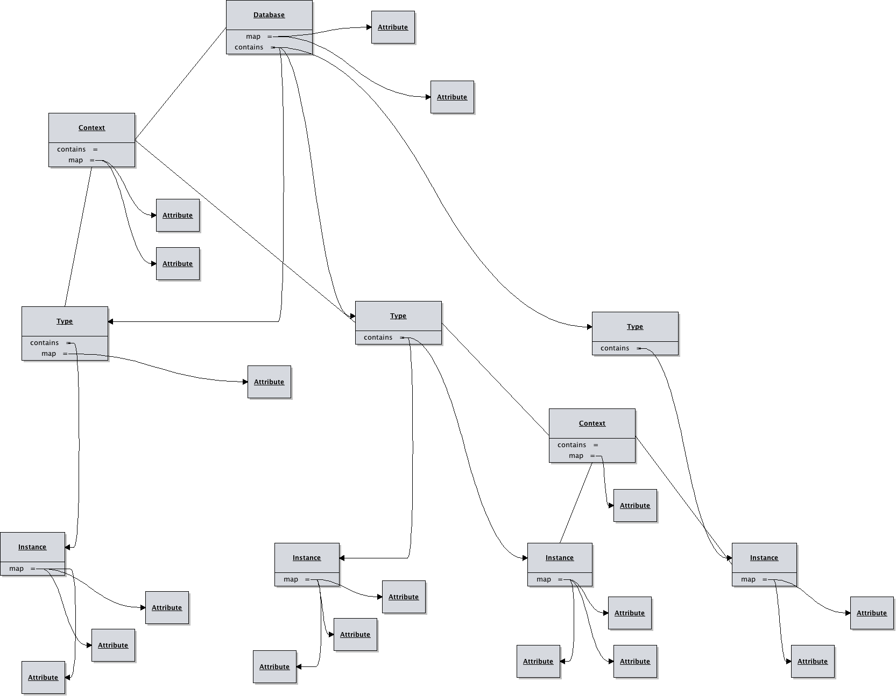

Yes, I bought a couple vowels...
Version:
Last
Edit:
I have spent my whole life trying to figure out crazy ways of doing things.
- Montgomery Scott
Table of Contents
Simple Configuration Transformation Tool 3
A Database as a Map of Types, Types as Maps of Instances 7
The Transformation Markup DSL Explained 9
Variables Available to Scripts 9
Things Are Not Always Simple 11
Mutable in Memory Database & Context 11
Scotty was written as a response to repeated exposures to crazy Rube Goldberg tools used to generate configuration files. Its designed to be sane and flexible, both in its implementation and use. It outputs configuration files by applying templates to data from a database of configuration data. The database is stored as a collection of XML files. The templates are text files containing markup language and scripts. The database scheme is simple and the scripts are in familiar languages, like BeanShell which is basically Java, so coming up to speed is easy, but allows for a great deal of flexibility. Scotty generates text output, so it can generate any sort of configuration file: properties, XML, JSON, etc. Additionally, The project is licensed under the ISC license, a permissive free software license written by the Internet Systems Consortium (ISC) – so enjoy!
A Scotty database is built up of topical XML files following a very simple scheme. Following is a sample database file containing host data, listing a sites host information.
<type name=”host” xmlns="http://nwillc.github.io/scotty"
xmlns:xsi="http://www.w3.org/2001/XMLSchema-instance"
xsi:schemaLocation="http://nwillc.github.io/scotty http://nwillc.github.io/scotty/database.xsd">
<attribute name=”company” value=”Acme”/>
<context>
<attribute name=”env”>
<value>dev</value>
<value>alpha</value>
</attribute>
<instance>
<attribute name="hostname" value="devbox"/>
<attribute name=”ip_address” value=”192.0.0.1”/>
</instance>
<instance>
<attribute name="hostname" value="devbox2"/>
<attribute name=”ip_address” value=”192.0.0.2”/>
</instance>
</context>
<instance>
<attribute name="hostname" value="prod1"/>
<attribute name=”env” value=”prod”/>
<attribute name=”ip_address” value=”192.0.0.3”/>
</instance>
</type>
Each file is a collection of instances of some type. Instances have attributes that define their properties. Instances can be grouped in contexts to express commonalities and instances can inherit from parent instances to allow for overriding of, or addition of, attributes.
Templates are text files containing Scotty's markup DSL and scripts. The markup and scripting allows the templates to retrieve data from the database. The following is an example template draws from the host instances from the database to create a Java Properties file.
# {#t host #}{#o hosts.properties #}
# This is a properties file template to be used with SCoTTy
# {#? company #}
{#
Context c = new Context(context,"type=host");
Set set = database.query(c, "hostname");
for (String hostname : set ) {
c.put("hostname", hostname);
Instance host = database.query(c).get(0);
output.format("%-20s%s\n", new Object[]{hostname,host.get("ip_address")});
}
#}
# End
Scotty is run from the command line, the command line describes the database, the runtime context, a template and the output file.
usage: java -jar scotty.jar [options]
-c,--context <assignments> Comma separated list of assignments to act
as the context.
-d,--database <filenames> Comma separated of XML files containing
types in database.
-f,--folder <directory> The folder to put output files in. Use "-"
for standard out.
-h,--help print this message.
-l,--language <language> Define an alternative scripting language.
BeanShell used by default.
-o,--output <filename> The name of the output file.
-p,--print Print the database out as a flattened text
file.
-t,--template <filename> The name of the template file.
The following could be used to use scotty to process the example files in this document:
$ java -jar scotty.jar -c env=prod -d hosts.xml -t hosts.scotty -o host.properties -f -
It's noteworthy that the files designated on the command line, the database files and template, can be in the file system or in the jar, this allows you to embed Scotty along with those files if you desire.
A database is made up of a map of types. Each type is contained in a single file, and is made up of a map of instances. Individual properties are set with attributes which can be placed at any level. Attributes are a named value, a value being either a string or collection of strings. Attributes are inherited, for example an attribute set in a type can be referenced by or overridden by any instance. Instances can be grouped into contexts for the purpose of attribute inheritance. Since the database and types are maps, the type name should be unique in the database and the instance names should be unique to a type.
The basic XML example for a type file is as follows:
<type name=””>
<instance name=””>
</instance>
<context>
<attribute name=”” value=””/>
<instance name=””>
<attribute name=””>
<value></value>
</attribute>
</instance>
</context>
</type>
A database would be a map of types, such as applications, hosts, environments etc. It is comprised of a hierarchy of types, and instances of those types. Attributes can be attached at any level and are inherited. Types and instances can be placed into contexts which allows inheritance subgroups.

Scotty's templates are nothing more then a text file annotated with a very simple markup language. The markups can insert retrieved values, run BeanShell scripts producing arbitrary output.
|
{#c attribute,... #} |
Assert the runtime context contains required attributes |
|
{#i template assignments #} |
Import another template into this one, with optional context assignments. |
|
{#l language #} |
Define the scripting language (See Scripts below) |
|
{#o filename #} |
Redirect output to indicated file. The file will be placed in the folder named in the database context. If the folder is “-” then this directive is ignore and the output goes to standard out. |
|
{#t type,... #} |
Assert the database contains required types |
|
{#? attribute assignments #} |
Query the database for an attribute best matching the given context. |
|
{#= attribute #} |
Return an attribute from the runtime context. |
|
{# …script… #} |
Run a script, BeanShell by default. |
|
Database database |
The root context of the parsed database. |
|
Context context |
The context that was provided on the command line. |
|
PrintStream output |
The output print stream being used by scotty. |
|
Attribute |
Description |
Where |
|---|---|---|
|
type |
The type name this context represents |
Any type instance in the database |
|
instance |
The instance name |
Any instance context in the database |
|
folder |
The folder that output files should be created in |
Any database context |
Full API documentation is available at http://nwillc.github.io/scotty/apidocs/ but the following is a concise explanation of the portions available to BeanShell.
|
Method |
Description |
|
Map<String, String> getMap() |
All the attributes in this context. |
|
Map<String, Context> getContained() |
Any contexts contained inside this one. |
|
Context getContainer() |
Get the context containing this one. |
|
Set<String> keySet() |
The list of attribute keys contained in this context and those of the context it is contained in. |
|
boolean containsKey(String key) |
Get the list of keys contained in the context. |
|
String get(String key) |
Get the string representation of a value of a key. |
|
Value getValue(String key) |
Get the actual value associated with key in a context. |
|
put(String attributes) |
Set attributes from a string representation (see API docs) |
|
boolean isContained() |
This context is contained in another. |
|
boolean isContainer() |
This context is a container of sub contexts. |
|
Method |
Description |
|
String toString() |
Returns the string representation which is a comma separated list of all the values. |
|
List<String> values() |
Gets a list of all the values contained in this value. |
|
Method |
Description |
|
List<Instance> query(Context c) |
Retrieves first attribute value from database found matching the name and context given. |
|
List<String> query(Context c, String attribute) |
Retrieves an ordered set of all the values of the attribute who's instance match the query. |
|
String find(String attribute) |
Retrieves the value of the attribute exactly matching the name given. |
|
void print(PrintStream stream, Context c) |
A debugging method, prints out the contents of the database in flattened form, with the similarity score of each instance to the context given. |
While scotty is designed to be simple, it does support techniques that are more advanced.
When you want an instance to have all the properties on an existing instance with some attribute additions or value changes you can employ inheritance. The following is an example of a host that is completely the same as another but is in a different environment:
<instance name=”devbox”>
<attribute name=”os” value=”linux”/>
<attribute name=”env” value=”dev”/>
<instance name=”qabox”>
<attribute name=”env” value=”qa”/>
<attribute name=”tag” value=”special”/>
</instance>
</instance>
Attributes can have a single value or multiple values. The notation for multiple values is:
<attribute name”light”>
<value>red</value>
<value>amber</value>
<value>green</value>
</attribute>
Attributes with multiple values will test all values of the attribute in queries. So the above would match a context with light=red or light=green. They will return a comma separated string on a simple find.
The database and context accessible in the scripts are modifiable. For example if you wanted to add app=webserver to the context you could simply:
{# context.put(“app”,”webserver”); #}
These changes are not persisted in any way.
A template may contain scripted portions (in BeanShell by default) which have access to the database, the runtime context, and the output stream. Scripts can therefore be used to perform elaborate traversals or even non persistent transformations of the database, producing completely flexible output.
Scotty uses Java's ScriptEngine support to allow loading in alternative scripting languages. For example if you provide the command line option “-l javascript” then any script in a {# … #} will be interpreted in JavaScript. Scotty uses JSR-223 compliant scripting languages, with BeanShell and JavaScript baked in, others will require additional jars.
BeanShell scripts, being roughly Java, can import additional java code. You can add a jar to your command line's -cp and then use the Java import the.class.Name; directive and then use that class in your script.
A template can use the {#i template assignments #} to import another template. The template is given it's own context, inheriting from the importers context with any additional specified assignments.
The results of the query method are returned in a useful deterministic order. They are sorted first by the best matching score, and when that is equal then by the instantiation order of the instance read from top to bottom of the database.
Matching score is determined by the similarity of the two contexts. Similarity is measured by +1.0 for each attribute that matches between the two contexts. A penalty of 0.25 is applied for each attribute that is a multiple value attribute.
So for example the similarity of the following two contexts would be 2.0:
<context>
<attribute name=”continent” value=”North America”/>
<attribute name=”country” value=”USA”/>
<attribute name=”year” value=”1945”/>
</context>
<context>
<attribute name=”continent” value=”North America”/>
<attribute name=”country” value=”Canada”/>
<attribute name=”year” value=”1945”/>
</context>
While the similarity of the following would be 1.5, since in one matching attribute, both values are multiples:
<context>
<attribute name=”continent” value=”North America”/>
<attribute name=”country”>
<value>USA</value>
<value>Canada</value>
<attribute>
<attribute name=”year” value=”1945”/>
</context>
<context>
<attribute name=”continent” value=”North America”/>
<attribute name=”country”>
<value>USA</value>
<value>Canada</value>
<attribute>
<attribute name=”year” value=”1945”/>
</context>
This similarity scoring allows you to associate general data with instances and then override the instance with more specific attributes for more specifics cases. Say all applications might have attributes to do with logging, but those written in Java need Log4J configuration attributes.
To help resolve scoring ambiguities see the void print(PrintStream stream, Context c) Database method that will print database instances and how they compare to given context.
This projected is licensed under the ISC license:
Copyright (c) 2013-2014, nwillc@gmail.com
Permission to use, copy, modify, and/or distribute this software for any purpose with or
without fee is hereby granted, provided that the above copyright notice and this permission
notice appear in all copies.
THE SOFTWARE IS PROVIDED "AS IS" AND THE AUTHOR DISCLAIMS ALL WARRANTIES WITH REGARD TO
THIS SOFTWARE INCLUDING ALL IMPLIED WARRANTIES OF MERCHANTABILITY AND FITNESS. IN NO EVENT
SHALL THE AUTHOR BE LIABLE FOR ANY SPECIAL, DIRECT, INDIRECT, OR CONSEQUENTIAL DAMAGES OR
ANY DAMAGES WHATSOEVER RESULTING FROM LOSS OF USE, DATA OR PROFITS, WHETHER IN AN ACTION OF
CONTRACT, NEGLIGENCE OR OTHER TORTIOUS ACTION, ARISING OUT OF OR IN CONNECTION WITH THE USE
OR PERFORMANCE OF THIS SOFTWARE.
Scotty is written in Java (1.7+) and built with gradle (1.2+). It uses open source packages for functional programming (almost-functional), command line parsing (commons-cli), scripting (bsh) and testing (contracts, junit, fest & cucumber). It is extremely light weight, has been test built on a linux atom netbook in under a minute and the resultant jar, with all dependencies needed is under half a megabyte.
The project home page is at http://nwillc.github.io/scotty
Scotty API documentation: http://nwillc.github.io/scotty/apidocs/
BeanShell: http://www.beanshell.org/
Version: